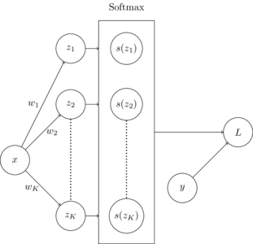

Softmax regression is a parametric classification method that is used to estimate multiclass output given real-valued input vectors. In this post, cross entropy loss is used as the loss function and gradient descent (or batched gradient descent) is used to learn parameters.
The computation graph below shows how softmax regression works. The dot product of each input \(\vec{x}\), and each vector \(\vec{w}\) for each of \(K\) classes is taken, resulting in values \(z_1\) to \(z_k\). The softmax function is applied to then new vector \(\vec{z}\), composed of \([z_1, z_2, ..., z_K]\). The loss is then calculated using the cross entropy loss on label vector \(\vec{y}\) and \(\vec{z}\).

Given a data set X of size \(N\) with \(D\) dimensions, parameters \(w\) must be learned for each of \(K\) classes that minimize our loss function \(L_{\text{CE}}(y, \hat{y})\). The weight vectors are learned using gradient descent. The derivation for term \(\frac{\partial L}{\partial w_i}\) in the weight update is displayed in the derivations section of this post.
Code for a softmax regression classifier is shown in the block below
from typing import List
from tqdm import trange
import torch
def Softmax(x: torch.Tensor) -> torch.Tensor:
""" Apply softmax function to tensor
Args:
x: input tensor
Returns:
tensor with softmax function applied to all members
"""
return torch.exp(x) / torch.sum(torch.exp(x), dim=1)[:, None]
def OneHotErrorRate(y: torch.Tensor, yhat: torch.Tensor) -> torch.Tensor:
""" Calculate error rate for one-hot encoded multiclass problem
Args:
y: true labels
yhat: predicted labels
Returns:
error rate
"""
return ErrorRate(torch.argmax(y, dim=1), torch.argmax(yhat, dim=1))
class SoftmaxRegressionClassifier:
def __init__(self) -> None:
""" Instantiate softmax regression classifier
"""
self.w = None
self.calcError = OneHotErrorRate
def fit(self, x, y, alpha=1e-4, epochs=1000, batch=32):
""" Fit logistic regression classifier to dataset
Args:
x: input data
y: input labels
alpha: alpha parameter for weight update
epochs: number of epochs to train
batch: size of batches for training
"""
y = torch.Tensor(createOneHotColumn(y.numpy())[0])
self.w = torch.rand((y.shape[1], x.shape[1]))
epochs = trange(epochs, desc='Accuracy')
for epoch in epochs:
rargs = torch.randperm(x.shape[0])
x, y = x[rargs], y[rargs]
start, end = 0, batch
for b in range((x.shape[0]//batch)+1):
if start < x.shape[0]:
sz = self.probs(x[start:end])
dw = self.calcGradient(x[start:end], y[start:end], sz)
self.w = self.w - alpha * dw
start += batch
end += batch
sz = self.probs(x)
accuracy = 1 - self.calcError(y, sz)
epochs.set_description('Accuracy: %.4f' % accuracy)
def probs(self, x: torch.Tensor) -> torch.Tensor:
""" Predict probabilities of belonging to each class
Args:
x: input data
Returns:
probabilities for each member of input
"""
return Softmax(torch.einsum('ij,kj->ik', x, self.w))
def predict(self, x: torch.Tensor) -> torch.Tensor:
""" Predict labels
Args:
x: input data
Returns:
labels for each member of input
"""
hx = self.probs(x)
return torch.argmax(hx, dim=1)[:, None]
def calcGradient(self, x: torch.Tensor, y: torch.Tensor, probs: torch.Tensor) -> torch.Tensor:
""" Calculate weight gradient
Args:
x: input data
y: input labels
probs: predicted probabilities
Returns:
tensor of gradient values the same size as weights
"""
return torch.einsum('ij,ik->jk', probs - y , x) / x.shape[0]
Derivative of arbitrary sigmoid output \(s(z_j)\) with respect to arbitrary linear combination output \(z_i\):
Derivative of loss function \(L\) with respect to arbitrary linear combination output \(z_i\):
Derivative of weight \(w_i\) with respect to linear combination \(z_i\):
Derivative of weight \(w_i\) with respect to loss: